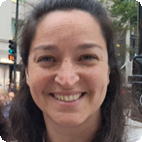
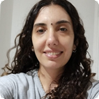
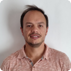
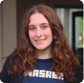

Modelización y Optimización
Desarrollo de modelos matemáticos y técnicas de optimización aplicadas a problemas complejos.
- Modelización
- Optimización
Somos un grupo de investigación del Departamento de Matemática que desarrolla herramientas de modelización, optimización, estadística y aprendizaje automático para abordar problemas complejos en contextos urbanos, naturales y socioeconómicos.
Ciencia de datos, matemática aplicada y métodos estadísticos para producir conocimiento útil, transferible y de calidad.
Algunas de las líneas en que trabajamos.
Desarrollo de modelos matemáticos y técnicas de optimización aplicadas a problemas complejos.
Métodos de aprendizaje supervisado y no supervisado para análisis y predicción.
Análisis y modelado de datos temporales en contextos reales.
Técnicas de inferencia y análisis multivariado para el estudio de datos complejos.
Estudio de sistemas complejos mediante estructuras de grafos y redes.
Modelos espaciales y espacio-temporales para el análisis de fenómenos geográficos.
El grupo está conformado por investigadores, docentes y becarios que trabajan en distintas líneas de investigación.
Modelización, estadística y análisis de datos.
Optimización, redes y matemática aplicada.
Estadística, investigación interdisciplinaria y docencia.

IntegranteTeoría de grafos y estructuras discretas.
Modelado, análisis cuantitativo y aplicaciones.

IntegranteAnálisis de datos y formación académica.
Aprendizaje automático, series temporales y datos.

IntegranteDidáctica, estadística y tecnologías educativas.

Becaria CICProblemas estadísticos y herramientas digitales.
Apoyo a investigación y formación inicial.
 Ex integrante
Ex integrante
Participación en proyectos y actividades previas del grupo.
El grupo desarrolla proyectos en ciencia de datos, modelado estadístico y optimización, aplicados a problemáticas urbanas, ambientales, socioeconómicas, entre otras.
Desarrollo de modelos estadísticos y de aprendizaje automático para analizar sistemas complejos.
Leer másBreve descripción del proyecto.
Leer másSe propone estimar el PBG de General Pueyrredon mediante machine learning para actualizar y completar su serie histórica, mejorando el análisis de la economía local.
Leer másBreve descripción del proyecto.
Leer másEl grupo desarrolla actividades de transferencia, formación y asesoramiento, aplicando herramientas de modelado matemático, estadística y ciencia de datos a distintas problemáticas.
Espacio para incorporar nuevas actividades de transferencia con instituciones públicas, privadas o del sistema científico.
Producción científica del grupo organizada por tipo de publicación.
Actividades, convocatorias, eventos y producción reciente del grupo.

Sumate a proyectos de análisis de datos, optimización, modelización y aprendizaje automático.

Charlas con investigadores invitados y presentación de resultados recientes del grupo.

Resultados recientes en modelización, optimización y análisis estadístico aplicado.
Si tenés consultas, propuestas de colaboración o interés en nuestras líneas de investigación, no dudes en escribirnos.